Pengembangan Praktik
Pertanian
Know better, Do better
Melalui pelatihan langsung dan Sekolah Lapangan, petani memperkuat pemahaman mereka mengenai Good Agricultural Practices (GAP) dan pertanian regeneratif.
Pelatihan berfokus pada praktik pengelolaan lahan pertanian, termasuk pengelolaan tanah dan nutrisi, tanaman penutup tanah, pengendalian hama terpadu, dan penggunaan sarana produksi pertanian secara bertanggung jawab.
The Shift
From

Routine, familiar
farming practices
To
Informed, evidence-
based farm management